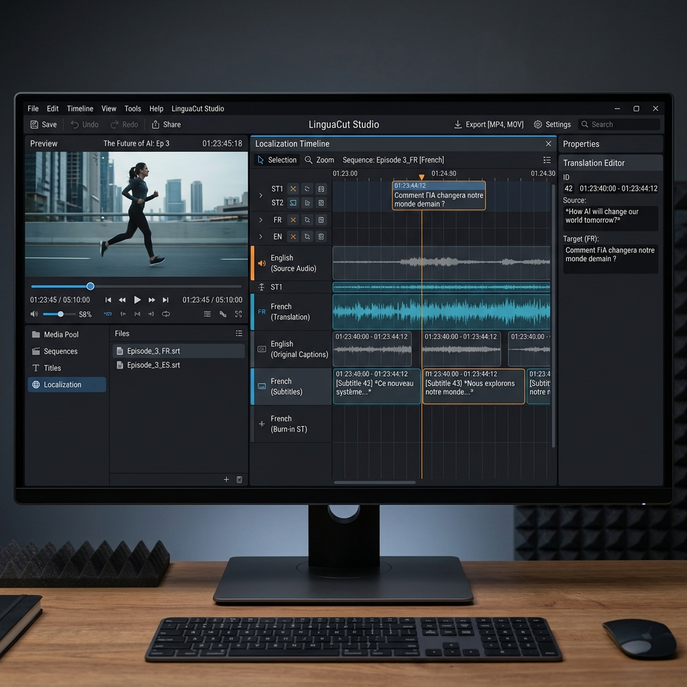
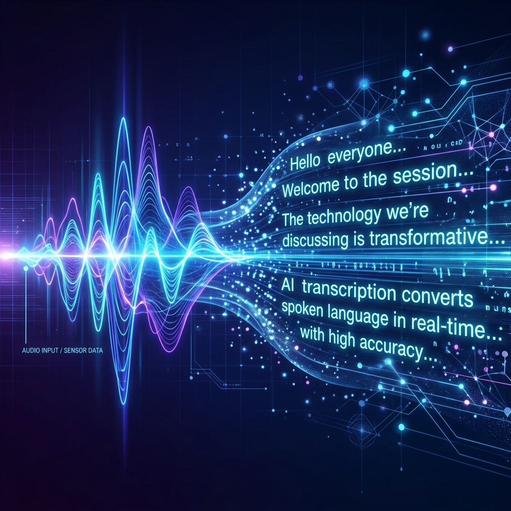

VIUStudio is a Windows desktop application for creating Vietnamese or English subtitles, translated video, voice-over, and timed visual layers.

Advanced transcription, OCR, cloud translation, and powerful TTS engines integrated directly into a professional timeline editor.
Powered by Faster-Whisper or SenseVoice. Extracts highly accurate text from audio with built-in optional speaker diarization.
Dealing with hard-coded subtitles? VIUStudio's OCR engine scans video frames to extract burned-in text seamlessly.
Integrates premium Cloud/API translation providers, with Google Translate as a reliable fallback for global localization.
Includes Piper and Edge TTS natively. You can configure optional speaker diarization and assign specific AI voices per speaker for realistic dialogue.
A robust timeline supporting: subtitles, blur, logo, mask, text overlays, selection ranges, track locks, and real-time Fast Preview.
VIUStudio follows a strict linear process to ensure the highest quality localization output without the confusion of scattered tools.

Import your source video, set up project directories, and configure your target languages.
Run Faster-Whisper or OCR to extract the original text and timings from the video.
Process the transcribed text through Cloud APIs to generate accurate translations (e.g. English to Vietnamese).
Assign Piper or Edge TTS voices to generate synchronized audio for the translated text.
Render the final video with embedded subtitles, visual layers (blur/mask), and mixed audio tracks.